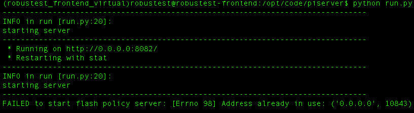

8. Running Automation Tests¶

To run your automated test cases, you need to organize them in a Test Suite. Click on Run and you will be able to see all the existing test suites that have been created by you or members of your project.
You can either run and existing test suite or create a new one. Click on “New Test Suite” button to create your new test suite.
You need to provide a name for your test suite and select the test cases you wish to add to the test suite. Once you click on Create, the Test Suite is created and is ready to be run.
Now you can click on the Run button for the Test Suite to create a Test Run.
You will be asked to provide a name for the test run (optional) and select the device(s) you wish to run the Test Suite on. After providing appropriate information, click on Run to execute your automation test suite.
Reports
Once your test run completes its run, you can view the detailed execution report in the Reports section.